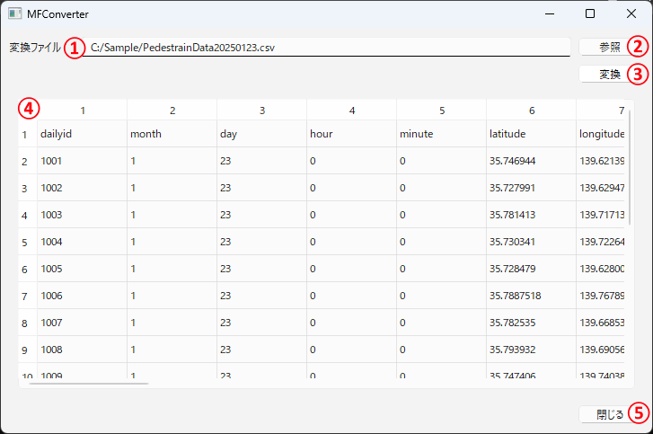

操作マニュアル
1 本書について
本書では、人流データ変換ツール（以下「本システム」という。）の操作手順について記載しています。
2 使い方
ファイル「MFConverterMain.exe」を実行すると以下の画面が表示されます。
① 変換ファイル
・読み込んだファイルの名前が表示されます。
② 参照
・クリックするとファイルダイアログが表示されます。
・ダイアログ内で選択されたファイルを変換元の人流データとして読み込みます。
③ 変換
・クリックすると、読み込んだ人流データを汎用フォーマット人流データに変換（※）します。
・変換された汎用フォーマット人流データは変換元のファイルと同じフォルダ内に出力されます。
④ 人流データ情報一覧
・読み込んだファイルに含まれている人流データに関する情報を一覧で表示します。
⑤ 閉じる
「MFConverterMain.exe」を終了します。

（※）変換中は以下の画面が表示されます。「Finished」というメッセージが表示されると変換完了となります。

3 出力データ
本システムで出力されるデータは以下のとおりです。
| 出力データ | 内容 | データ形式 |
|---|---|---|
| 変換人流データ | 読み込んだ人流データを汎用フォーマット人流データに変換したデータ。 | JSON |